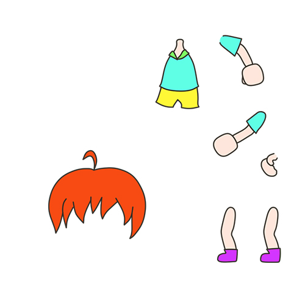
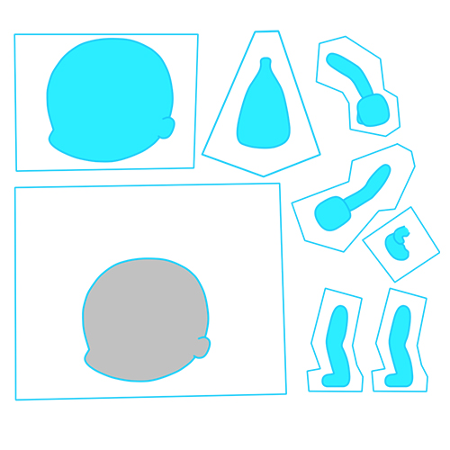
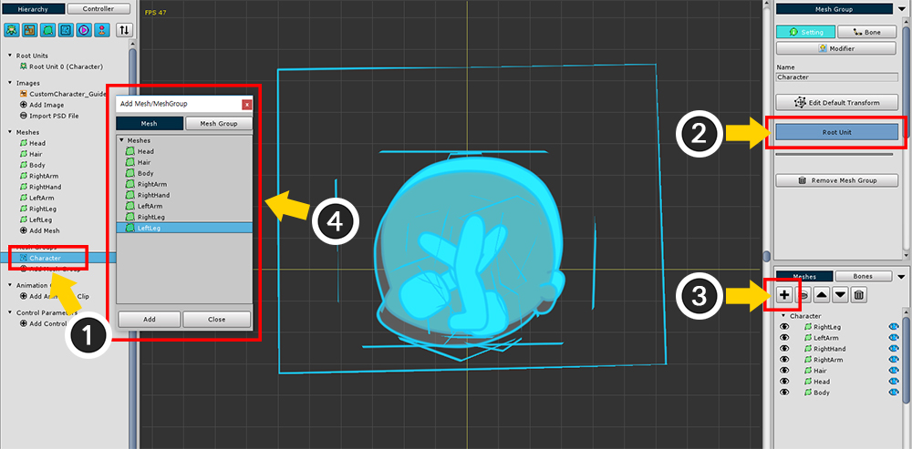
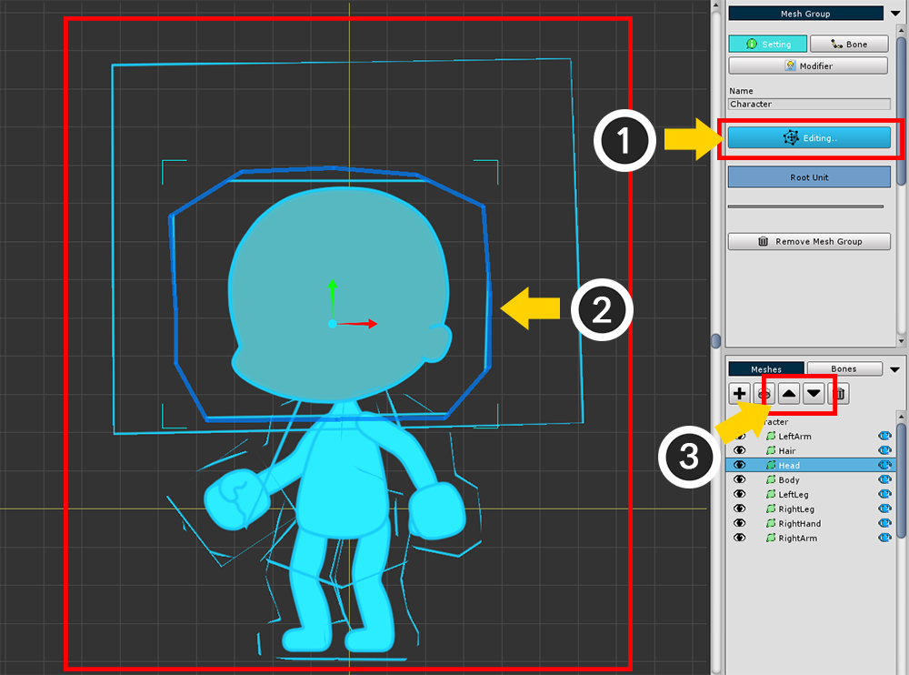
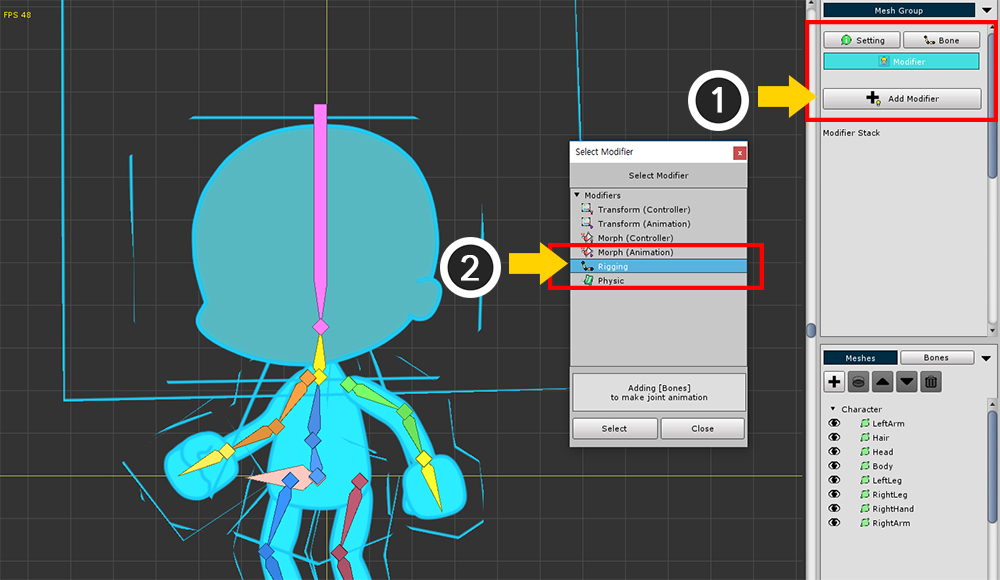
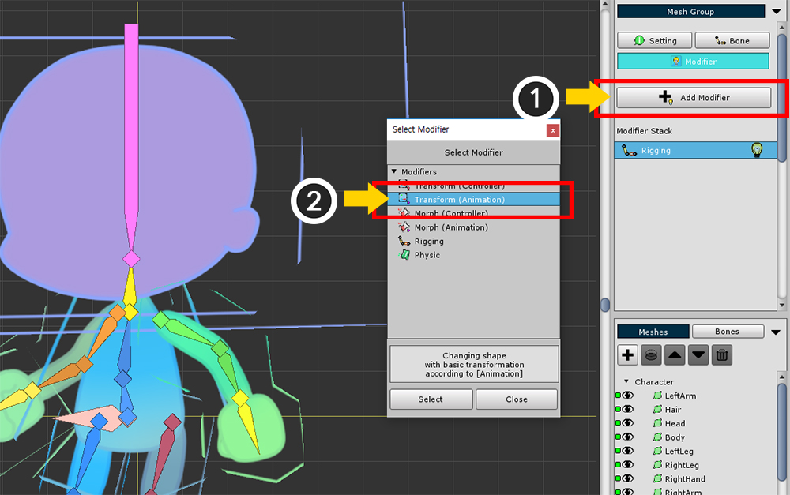
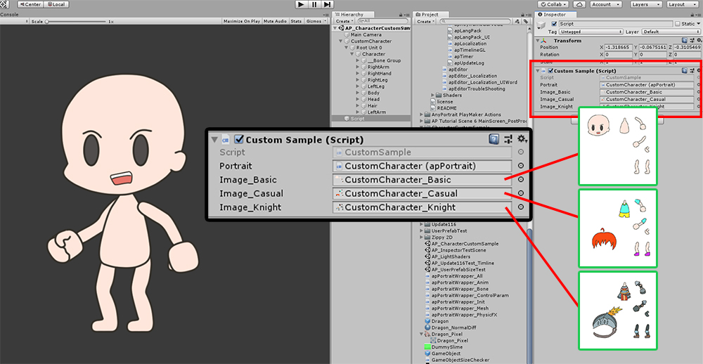
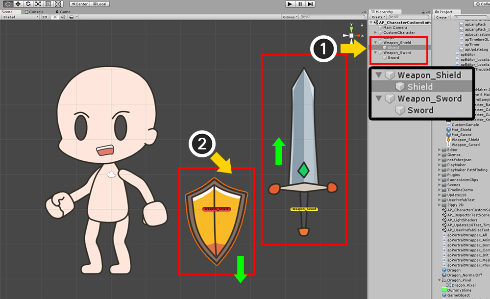
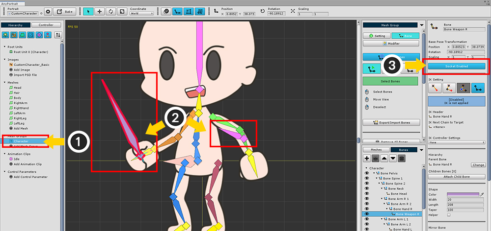
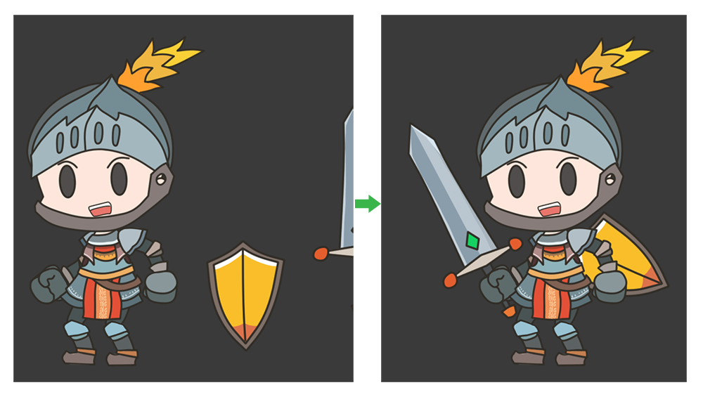

AnyPortrait > 메뉴얼 > 캐릭터의 의상을 교체하기
캐릭터의 의상을 교체하기
1.1.0
게임에서 아이템을 획득하면 캐릭터가 옷이나 장비를 바꾸는 것은 기본적인 기능일 것입니다.
캐릭터의 의상을 교체하는 기능을 구현하는 것은 여러가지 방법이 있습니다.
모든 옷이나 장비의 애니메이션들을 일일이 만들고 교체하는 방법도 있고, 간단히 색상이나 텍스쳐만 바꾸는 방법도 있습니다.
이 페이지에서는 AnyPortrait를 이용하여 캐릭터의 의상 교체를 "텍스쳐 교체"를 통해서 간단히 구현하는 방법을 다룹니다.
또한 "소켓(Socket)"을 이용하여 무기와 방패를 착용하는 기능을 스크립트와 함께 구현하는 내용도 다룹니다.
공통된 방식으로 구성된 Atlas 준비하기

캐릭터의 의상을 교체하는 예제를 위해서 위와 같은 이미지들을 준비했습니다.
첫번째 그림은 캐릭터가 어떠한 옷도 입지 않는 가장 기본적인 상태입니다.
두번째 그림의 캐릭터는 캐주얼한 복장을 하고 있으며, 주황색의 단발 머리를 가지고 있습니다.
세번째 그림의 캐릭터는 강철로 된 장비의 기사 복장을 하고 있으며, 검과 방패를 들고 있습니다.
위와 같이 캐릭터가 의상을 교체하여 다양한 외형을 가지도록 하고자 합니다.
이 페이지에서는 각각의 메시들의 텍스쳐를 실시간으로 변경하는 기능을 구현하여 외형을 바꿀 수 있도록 하고자 합니다.
이 방법은 간단하지만 다음의 주의사항들이 있습니다.
- 모든 텍스쳐의 Atlas의 구성은 동일해야 합니다.
- "PSD 파일 가져오기" 기능은 Atlas를 자동으로 생성하므로 여기서는 이용할 수 없습니다.
- 이미지의 크기와 형태가 다양하므로 메시를 만들 때 꽤 크게 만들어야 합니다.
- 동일한 본과 물리 재질을 공유하는 의상이 아니라면 미리 그에 맞는 다른 메시를 만들어야 합니다.
- 기본 의상에는 적용되지 않더라도, 다양한 의상들을 위해서 본들을 더 추가할 필요가 있습니다.
- 텍스쳐를 교체하면 드로우콜이 증가할 수 있습니다.
위와 같은 주의 사항에 따라서 네번째 그림과 같이 "레퍼런스 캐릭터"를 만들었습니다.
레퍼런스 캐릭터는 "기본 외형"과 함께 "이후에 교체될 수 있는 의상의 이미지의 크기"를 같이 표시한게 특징입니다.




위 주의사항에 따라 완성된 4개의 캐릭터 텍스쳐 Atlas 입니다.
머리(Head)와 머리카락(Hair)의 영역을 분리하였으며, 몸통, 팔과 다리를 각각 분리했습니다.
검과 방패는 Atlas에 포함시키지 않았습니다.
레퍼런스 캐릭터 텍스쳐를 이용하여 메시 만들기

AnyPortrait 에디터를 열고 새로운 캐릭터를 만듭니다.
준비된 텍스쳐 중에서 "레퍼런스 캐릭터" 텍스쳐를 선택하여 이미지로 추가합니다.

이제 메시들을 하나씩 만듭니다.
일반적인 메시 만들기 과정과 달리 레퍼런스 캐릭터의 메시는 다음과 같이 구성됩니다.

일반적으로는 붉은색 영역 (Basic Area)과 같이 이미지의 형태에 맞게 메시를 만들 것입니다.
그러나 변경될 이미지의 크기를 모르므로, 녹색 영역 (Maximum Area)과 같이 적당히 더 크게 메시를 만듭니다.

같은 방식으로 다른 메시들도 만듭니다.
관절이 있는 부위에서 버텍스들이 많이 추가된 것을 볼 수 있습니다.
버텍스들이 많은 경우 이미지와 움직임에 따라서 버텍스의 Z-Depth 값을 수정할 필요가 있습니다. (관련 페이지)
레퍼런스 캐릭터 만들기

(1) 메시 그룹을 생성합니다.
(2) 메시 그룹의 이름을 정하고 루트 유닛으로 설정합니다.
(3) "+" 버튼을 누르고, (4) 메시들을 추가합니다.

(1) Edit Default Transform 버튼을 누릅니다.
(2) 각각의 메시들의 위치를 수정합니다.
(3) 메시의 순서를 적절히 변경합니다.
모든 작업이 끝나면 다시 Edit Default Transform 버튼(또는 Editing.. 버튼)을 눌러서 편집을 종료합니다.

레퍼런스 캐릭터가 잘 만들어졌는지 테스트해볼 수 있습니다.
(1) 이미지를 선택합니다.
(2) Select Image 버튼을 누릅니다.
(3) 레퍼런스 텍스쳐가 아닌 다른 캐릭터 텍스쳐를 선택합니다.

현재의 이미지가 레퍼런스가 아닌 기본 캐릭터 텍스쳐로 변경되었습니다.

메시 그룹을 다시 선택하면, 텍스쳐를 교체하였을 뿐인데 캐릭터의 외형이 바뀐 것을 볼 수 있습니다.
Atlas가 동일한 방식으로 구성되어 있다면, 위와 같이 텍스쳐만 교체해서 외형을 바꿀 수 있습니다.
이 과정은 테스트를 위한 것이므로 다시 레퍼런스 캐릭터 텍스쳐로 변경합니다.
(이후에 이 기본 캐릭터 텍스쳐를 사용할 것이지만, 현재 단계에서는 레퍼런스 텍스쳐를 이용하는 것이 편리합니다.)

본을 추가합니다.
만약 교체될 의상에 따라 본을 추가할 필요가 있다면, 이 단계에서 미리 본을 추가하는 것이 좋습니다.

(1) Modifier 탭을 선택하고 Add Modifier 버튼을 누릅니다.
(2) Rigging 모디파이어를 선택하고 추가합니다.

Rigging 모디파이어를 선택한 상태에서 모든 메시들을 각각 선택하여 본에 대한 가중치를 설정합니다.
이미지로 보이는 것보다 메시의 크기가 더 크므로 주의하여 가중치를 설정합니다.

Rigging 모디파이어에 대한 작업이 모두 끝났다면, 다음은 본을 이용하여 애니메이션을 만들 차례입니다.
(1) Add Modifier 버튼을 누릅니다.
(2) Transform (Animation) 모디파이어를 선택하고 추가합니다.

(1) 새로운 애니메이션 클립을 생성합니다.
(2) 애니메이션의 이름과 대상이 되는 메시 그룹을 설정하고 Add Timeline 버튼을 누릅니다.
(3) Transform (Animation) 모디파이어를 타임라인으로 등록합니다.

(1) Bones 탭을 선택합니다.
(2) All Bones to Layers 버튼을 눌러서 모든 본들을 타임라인 레이어로 등록합니다.

본들을 하나씩 선택하여 캐릭터 애니메이션을 만듭니다.
(꼭 본으로만 애니메이션을 만들 필요는 없습니다. 자유롭게 애니메이션을 만들어보세요.)

이제 완성된 캐릭터 애니메이션을 유니티 씬으로 옮길 차례입니다.
(1) 루트 유닛을 선택합니다.
(2) 기본이 되는 애니메이션 클립을 선택합니다.
(3) Auto Play 설정을 켭니다.
(4) Bake 버튼을 눌러서 Bake 다이얼로그를 엽니다.
(5) Bake 다이얼로그의 Bake 버튼을 누르고 AnyPortrait 에디터를 종료합니다.

유니티에서 게임을 실행하면, 레퍼런스 캐릭터의 애니메이션이 재생되는 것을 볼 수 있습니다.
캐릭터의 의상을 교체하는 스크립트 작성하기
다음 단계는 스크립트를 작성하여 캐릭터의 의상을 교체하는 기능을 구현해보는 것입니다.
키보드 입력을 이용하여 "옷을 입지 않은 상태", "캐주얼한 옷을 입은 상태", "기사 장비를 착용한 상태"를 전환하는 것을 구현해보겠습니다.
특히, 머리(Hair) 부분과 그 외의 메시들을 구분하여 의상을 교체하도록 작성해보겠습니다.

레퍼런스 캐릭터로 애니메이션을 모두 만들었다는 가정 하에, 이제 텍스쳐를 기본 캐릭터의 것으로 변경해보겠습니다.
(1) 이미지를 선택하고 (2) Select Image 버튼을 눌러서 "기본 캐릭터 텍스쳐"로 변경합니다.

텍스쳐가 변경되었습니다.

다시 Bake를 하여 유니티 씬에 적용합니다.

"옷을 입지 않은 상태"의 캐릭터로 변경되었습니다.
이제 새로운 C# 스크립트를 새로 생성하고 아래와 같이 작성합니다.
public class CustomSample : MonoBehaviour
{
// 대상이 되는 apPortrait
public apPortrait portrait;
// 3종의 캐릭터 텍스쳐
public Texture2D image_Basic;
public Texture2D image_Casual;
public Texture2D image_Knight;
void Start () { }
void Update ()
{
// Q, A, Z 키를 누르면 "Hair" 메시의 텍스쳐가 바뀝니다.
if ( Input.GetKeyDown(KeyCode.Q) )
{
portrait.SetMeshImage( "Hair", image_Basic );
}
if ( Input.GetKeyDown(KeyCode.A) )
{
portrait.SetMeshImage( "Hair", image_Casual );
}
if ( Input.GetKeyDown(KeyCode.Z) )
{
portrait.SetMeshImage( "Hair", image_Knight );
}
// W, S, X 키를 누르면 "Hair", "Head" 외의 다른 메시들의 텍스쳐가 바뀝니다.
if ( Input.GetKeyDown(KeyCode.W) )
{
portrait.SetMeshImage( "Body", image_Basic );
portrait.SetMeshImage( "LeftArm", image_Basic );
portrait.SetMeshImage( "RightArm", image_Basic );
portrait.SetMeshImage( "RightHand", image_Basic );
portrait.SetMeshImage( "LeftLeg", image_Basic );
portrait.SetMeshImage( "RightLeg", image_Basic );
}
if ( Input.GetKeyDown(KeyCode.S) )
{
portrait.SetMeshImage( "Body", image_Casual) ;
portrait.SetMeshImage( "LeftArm", image_Casual );
portrait.SetMeshImage( "RightArm", image_Casual );
portrait.SetMeshImage( "RightHand", image_Casual );
portrait.SetMeshImage( "LeftLeg", image_Casual );
portrait.SetMeshImage( "RightLeg", image_Casual );
}
if ( Input.GetKeyDown(KeyCode.X) )
{
portrait.SetMeshImage( "Body", image_Knight );
portrait.SetMeshImage( "LeftArm", image_Knight );
portrait.SetMeshImage( "RightArm", image_Knight );
portrait.SetMeshImage( "RightHand", image_Knight );
portrait.SetMeshImage( "LeftLeg", image_Knight );
portrait.SetMeshImage( "RightLeg", image_Knight );
}
}
}
apPortrait의 "SetMeshImage" 함수를 이용한 간단한 코드입니다. (관련 페이지)
텍스쳐를 변경하고자 하는 메시의 이름과 텍스쳐 에셋을 입력하여 캐릭터의 외형을 변경할 수 있습니다.

새로운 GameObject를 만들고 작성한 스크립트를 컴포넌트로 추가합니다.
이제 Public 멤버 변수들(apPortrait와 3개의 Texture2D)을 각각 연결합니다.

게임을 실행하면, 키 입력에 따라서 캐릭터의 옷이나 머리카락이 바뀌는 것을 볼 수 있습니다.
소켓을 이용하여 무기나 장비 교체하기
캐릭터가 사용하는 무기나 장비들 중에는 형태가 바뀌지 않아서 본에 영향을 받지 않는 것들이 있습니다.
검, 방패, 총과 같은 무기들이 대표적입니다.
또한 머리 위에 얹는 모자, 작은 장신구, 안경 등도 크게 형태가 바뀌지 않는 장비들입니다.
이러한 종류의 아이템을 장착하고자 할 때에는 소켓(Socket)을 이용하는 것이 더 효과적입니다.
소켓에 관한 자세한 설명은 관련 페이지에서 보실 수 있습니다.
이 페이지는 캐릭터의 오른손에 검을 장착하고, 왼팔에 방패를 장착하는 과정을 설명합니다.

검과 방패에 관한 이미지와 재질(Material)을 준비하고, Quad 메시를 이용하여 별도의 GameObject로 각각 만듭니다.

그런데 여기서 한가지 문제가 있습니다.
검, 방패의 이미지의 중심이 "캐릭터에 장착되는 부분"이 아닙니다.
따라서 "캐릭터에 장착이 되는 기준점"을 만들어야 합니다.
(1) 새로운 GameObject를 각각 만듭니다. 여기서는 "Weapon_Shield"와 "Weapon_Sword"로 이름을 지었습니다.
그리고 기존의 검, 방패 메시가 있는 GameObject들을 새로운 GameObject들의 자식으로 지정합니다.
(반대로 만들지 않도록 주의하세요.)
(2) 부모 GameObject의 위치가 "기준점"이 되도록 각각의 메시의 위치를 수정합니다.

(1) AnyPortrait 에디터를 열고 메시 그룹을 선택합니다.
(2) 검과 방패가 장착될 위치에 본을 추가합니다.
여기서는 오른손과 왼팔에 각각 추가했으며 이름은 각각 "Bone Weapon R"과 "Bone Weapon L"입니다.
(3) Socket Disabled 버튼을 눌러서 소켓 옵션을 켭니다.
그리고 Bake를 다시 합니다.
이제 다음의 코드를 기존에 작성한 스크립트에 추가로 작성합니다.
public class CustomSample : MonoBehaviour
{
// 대상이 되는 apPortrait
public apPortrait portrait;
// 3종의 캐릭터 텍스쳐
public Texture2D image_Basic;
public Texture2D image_Casual;
public Texture2D image_Knight;
// <추가> 검과 방패의 부모 Transform을 멤버로 추가합니다.
public Transform sword;
public Transform shield;
void Update ()
{
(생략됨...)
// <추가> E 키를 누르면 검과 방패를 장착합니다.
if ( Input.GetKeyDown(KeyCode.E) )
{
// 앞서 만든 두개의 본의 소켓을 가져옵니다.
Transform socketR = portrait.GetBoneSocket( "Bone Weapon R" );
Transform socketL = portrait.GetBoneSocket( "Bone Weapon L" );
// 검 (Weapon_Sword)을 오른손 본의 소켓의 자식으로 등록합니다.
sword.parent = socketR;
sword.localPosition = Vector3.zero;
sword.localRotation = Quaternion.identity;
// 방패 (Weapon_Shield)를 왼팔 본의 소켓의 자식으로 등록합니다.
shield.parent = socketL;
shield.localPosition = Vector3.zero;
shield.localRotation = Quaternion.identity;
}
// <추가> R 키를 누르면 검과 방패의 장착을 해제합니다.
if ( Input.GetKeyDown(KeyCode.R) )
{
sword.parent = null;
sword.localPosition = new Vector3(5, 0, 0);
sword.localRotation = Quaternion.identity;
shield.parent = null;
shield.localPosition = new Vector3(3, 0, 0);
shield.localRotation = Quaternion.identity;
}
}
}
스크립트를 작성한 후, 추가된 멤버인 sword에는 Weapon_Sword를 할당하고 shield에는 Weapon_Shield를 할당합니다.
게임을 실행해봅니다.

키를 입력하면 캐릭터의 오른손과 왼팔에 검과 방패가 장착되는 것을 볼 수 있습니다.

그런데, 장착된 검과 방패가 캐릭터보다 항상 뒤에서 렌더링되는 것을 볼 수 있습니다.
위치의 Z 값을 적절히 수정하여 장비가 적절한 위치에서 장착되도록 만들어야 합니다.

다시 AnyPortrait 에디터를 엽니다.
(1) Bake 버튼을 눌러서 Bake 다이얼로그를 엽니다.
(2) Z Per Depth 항목의 값을 증가시킵니다. 여기서는 10을 입력하였습니다.
(3) Bake 버튼을 눌러서 유니티 씬에 적용합니다.

이제 유니티 씬에서 각각의 메시들이 Z 축으로 조금 더 멀리 떨어져서 배치된 것을 볼 수 있습니다.
검과 방패를 이전과 마찬가지로 위치시키면 캐릭터 메시보다 항상 뒤에 있게 됩니다.
검과 방패의 메시가 있는 GameObject를 선택합니다.

적절한 순서로 렌더링이 되도록 Z 축으로 이동시킵니다.
아마도 로컬 좌표의 Z 축의 값이 음수의 값을 가질 것입니다.

게임을 실행하면 캐릭터의 의상을 바꾸는 것은 물론이고,
검과 방패를 장착했다가 해제하는 것이 가능해졌습니다.